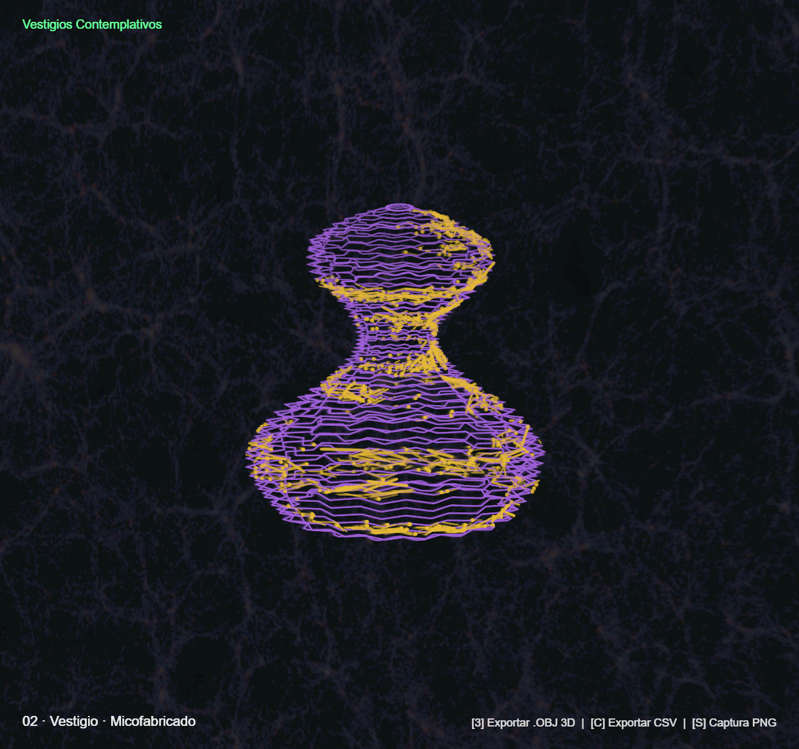

Investigación-creación · TRATAK
Vestigios Contemplativos
Un estado de atención, registrado con EEG, se convierte en forma y en materia. Lo que queda es un vestigio: un objeto que prueba que alguien estuvo presente.

Vestigio 02 · Micofabricado. Animación generativa en p5.js.
Qué es
Vestigios Contemplativos reúne contemplación, neurociencia, biomateriales, fabricación digital y cultura maker. Mide el estado de atención de una persona y lo traduce a geometría que se imprime en 3D con biomateriales.
Está en la línea de la arqueología prospectiva: diseñar vestigios a propósito, usar la ciudad como laboratorio y producir objetos y procesos que sirvan de evidencia futura de una experiencia presente.
El verdadero tesoro es entender el proceso.
Del cerebro a la materia
- RegistroSe capta la señal de EEG con un casco Unicorn (g.tec) y el software BCI2000.
- ProcesamientoLa señal se limpia y se analiza (FFT) para extraer sus rasgos.
- DatosLos rasgos se guardan como JSON.
- FormaUn modelo paramétrico convierte esos datos en geometría y en un archivo STL.
- MateriaLa pieza se imprime en 3D con biomateriales, o se lleva a una intervención urbana.
La metodología no es lineal por el orden de sus etapas. Lo es por las tecnologías culturales de la atención en las que se apoya: los Registros Akáshicos, Éxodo 31:3-5 y el Trāṭaka.
El QR: un portal
Cada vestigio físico lleva un QR. Al escanearlo llegas aquí, y desde aquí a la documentación audiovisual, al proceso y a otras capas del proyecto. El objeto es la puerta; la historia está detrás.
Video de proceso
Abrir en YouTube → Ver la animación generativa en vivo →Quiénes lo hacen posible
El grupo estudiantil WaveSense apoya el aprendizaje del EEG Unicorn. El proyecto participó en el hackatón br41n.io Designers (octubre de 2026).
¿Quieres un vestigio propio?
Escríbenos si quieres colaborar, llevar el proyecto a un evento o hacer tu propio vestigio.
Escribir por WhatsApp → Conocer TRATAK CAT →